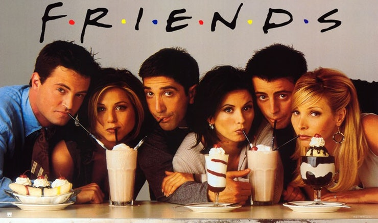

Friends
Ross, Rachel, Mônica, Chandler, Joey e Phoebe formam um grupo de seis amigos que lutam para se sobressair e progredir na competitiva vida de Manhattan. Seu humor inteligente e apoio mútuo incondicional fazem com sua amizade seja cada vez mais forte, superando assim todos os obstáculos que a vida lhes apresenta. Trabalho, família, responsabilidade, dinheiro, sexo, compromisso e, sobretudo, amor e amizade, são alguns dos temas que preocupam e, ás vezes, divertem esses personagens.
Não foi à toa que o sofá do Central Perk, o café onde se reúnem para conversar, foi trocado duas vezes por excesso de uso. Esta série foi filmada por dez temporadas, conquistando um sucesso após o outro. Sua trilha sonora promocional, "I'll Be There for You" (Rembrandts), é tão famosa quanto o programa, pois a sua mensagem e o refrão definem perfeitamente o significado da existência da série. Ao todo são 10 temporadas que somam num total de 236 episódios.
O primeiro episódio foi lançado em 22 de Setembro de 1994, e o último episódio em 6 de Maio de 2004.
Elenco
- Jennifer Aniston como Rachel Green
- Courteney Cox como Monica Geller
- Lisa Kudrow como Phoebe Buffay
- Matt LeBlanc como Joey Tribbiani
- David Schwimmer como Ross Geller
- Matthew Perry como Chandler Bing